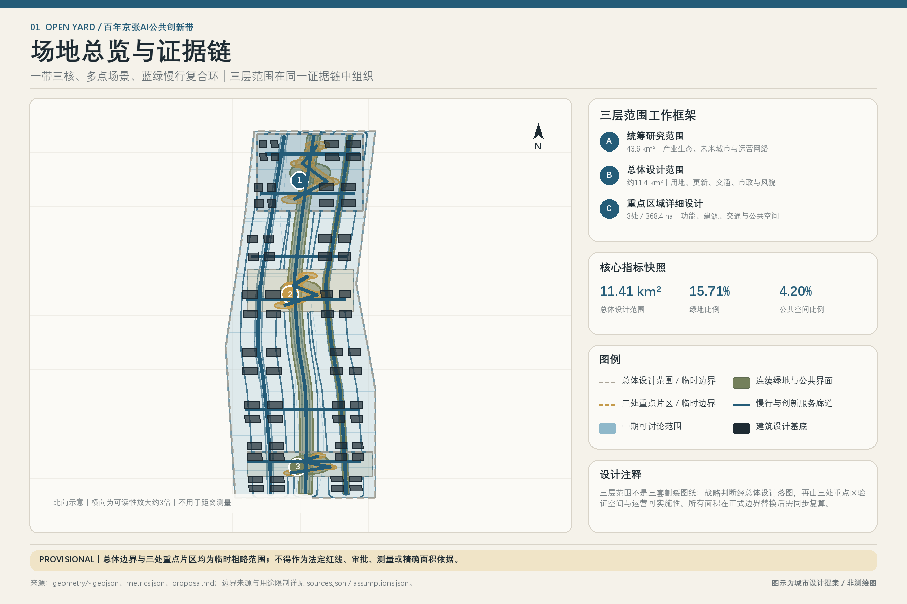
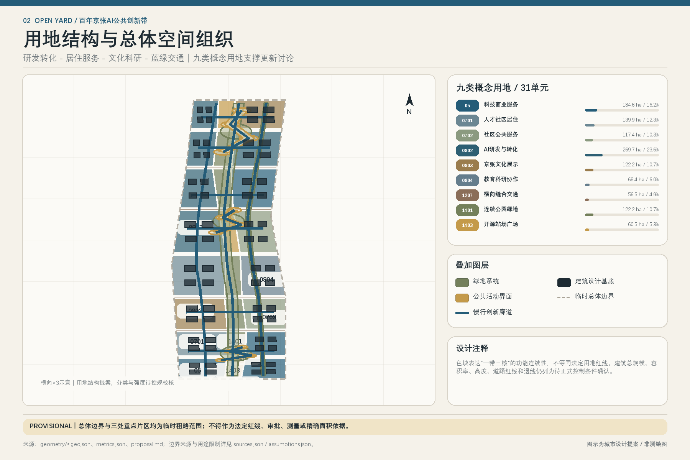
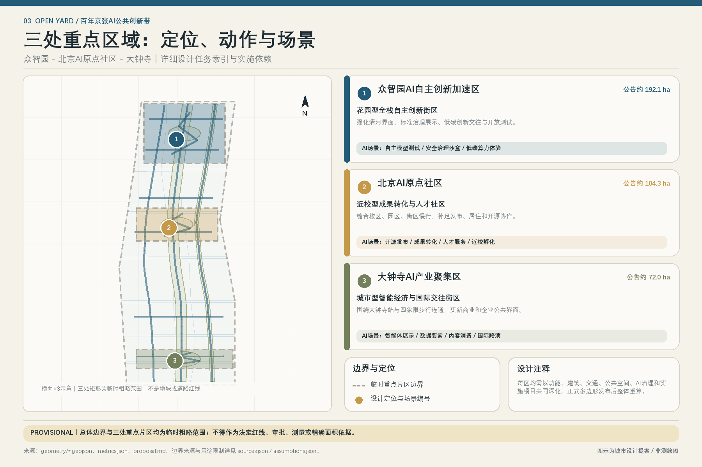
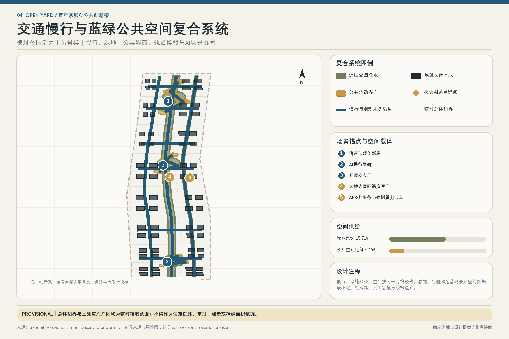
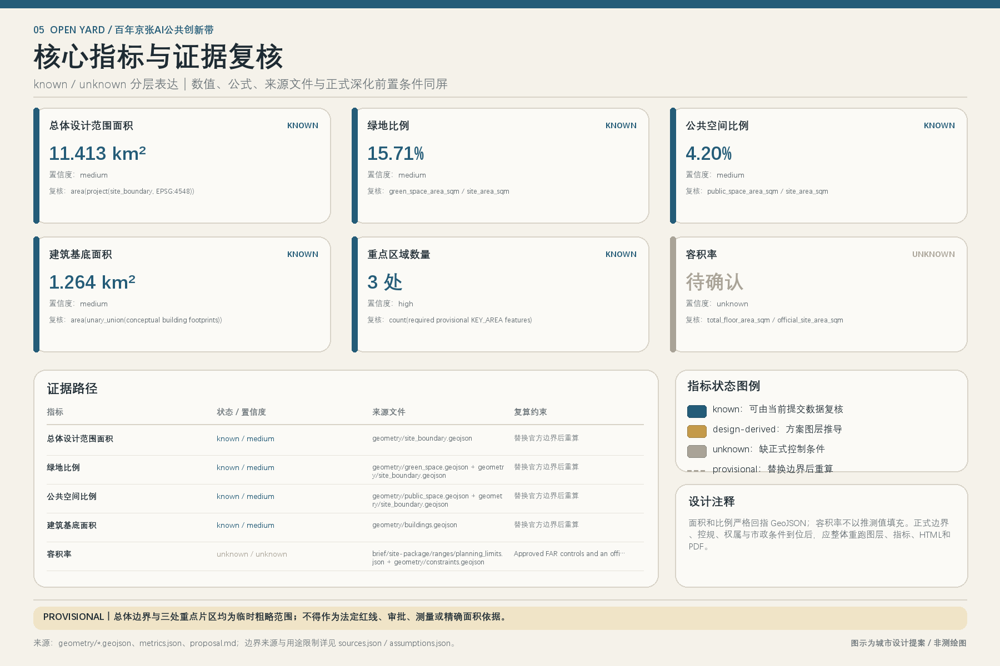

统筹研究范围
43.6 km²
AI产业生态、创新链、人才链、未来城市形态、品牌与长期运营。
OPEN YARD / 百年京张AI公共创新带 / 离线电子展示
以京张遗址公园为公共创新主轴，连接众智园、北京AI原点社区与大钟寺三处创新锚点，形成“一带三核、多点场景、蓝绿慢行复合环”。
PROVISIONAL｜总体边界与三处重点片区均为临时粗略范围；不得作为法定红线、审批、测量或精确面积依据。
01 / OVERVIEW

京张智脉共生带：高校策源 - 开源协作 - 企业转化 - 公共体验 - 国际传播。
一带三核多点场景蓝绿慢行复合环
当前建筑设计基底 1.264 km²；仅表达方案图层，不替代现状测绘、权属或拆改留审定。
统筹研究范围
AI产业生态、创新链、人才链、未来城市形态、品牌与长期运营。
总体设计范围
城市更新、用地、建筑、交通、市政、公共服务、蓝绿与风貌。
重点区域详细设计
功能业态、建筑、拆改留、公共空间、慢行、AI场景与实施项目。
02 / SPATIAL STRUCTURE


花园型全栈自主创新街区｜强化清河界面、标准治理展示、低碳创新交往与开放测试。｜自主模型测试 / 安全治理沙盒 / 低碳算力体验
近校型成果转化与人才社区｜缝合校区、园区、街区慢行，补足发布、居住和开源协作。｜开源发布 / 成果转化 / 人才服务 / 近校孵化
城市型智能经济与国际交往街区｜围绕大钟寺站与四象限步行连通，更新商业和企业公共界面。｜智能体展示 / 数据要素 / 内容消费 / 国际路演
03 / MOBILITY + BLUE GREEN

南北贯通、东西缝合；轨道接驳、非机动车、无障碍、绿色空间和公共活动界面按同一网络校核。
数据最小化、公开来源、可解释、人工复核；城市智能体不替代规划审批，不输出未经授权的个人画像。
04 / AI SCENARIOS
场景卡均需说明服务对象、空间位置、数据来源、隐私边界、人工复核机制与运营主体；当前内容是可供专业团队深化的概念建议。
北场·全栈验证场｜公共服务场景｜人工复核与退出
北场·全栈验证场｜产业测试验证｜人工复核与退出
北场·全栈验证场｜产业测试验证｜人工复核与退出
北场·全栈验证场｜公共服务场景｜人工复核与退出
中场·开源原点场｜公共服务场景｜人工复核与退出
中场·开源原点场｜产业测试验证｜人工复核与退出
中场·开源原点场｜公共服务场景｜人工复核与退出
中场·开源原点场｜公共服务场景｜人工复核与退出
南场·智能生活场｜公共服务场景｜人工复核与退出
南场·智能生活场｜产业测试验证｜人工复核与退出
南场·智能生活场｜公共服务场景｜人工复核与退出
南场·智能生活场｜公共服务场景｜人工复核与退出
连续路径、清晰导向与线下替代｜无障碍慢行站与可用性反馈｜不得自动判断能力或限制服务
可复现评测、治理与跨机构协作｜共享测试、治理沙盒与研讨空间｜不得绕过安全与伦理审查
清权素材、发布与公众交流｜开放档案、内容工坊与展演界面｜版权、肖像与史实可追溯
标准接口、真实场景与故障反馈｜受控测试位与成果转辙服务｜不以公共空间替代产品合规
多语导览、开放活动与跨境合作信息｜国际路演客厅与公共导览｜翻译人工复核且不追踪个人
安静、安全、可达服务与参与权｜站场议事、日常服务和反馈渠道｜可拒绝AI并保留线下服务
可复现环境、维护协作与贡献认可｜开源发布、共享测试和贡献展陈｜许可清晰、署名可核验可撤回
低成本验证、专业服务与市场反馈｜近校孵化、成果转化和路演｜不承诺投资、采购或准入
学习、实习、开源贡献与公共体验｜课程工坊、贡献营与人才服务｜未成年人和教育数据最小化
05 / RENEWAL PROJECTS
项目清单区分设计建议与实施承诺。权属、资金、责任主体、道路、市政、生态、防洪和审批路径均是正式深化前置条件。
官方数据替换与现状底图｜全范围/基础工作｜合法清权资料｜准备期
京张公共主线连续性调查｜京张遗址公园/公共空间｜官方公园/道路/文保资料｜准备期
十二站通用组件试点｜三场两翼｜场地许可、消防、版权｜近期
众智园全栈试验站｜PROV-KEY-001方向｜网络安全、数据、机房条件｜近期
全栈安全灯塔与解释廊｜PROV-KEY-001方向｜内容审查、企业授权｜近期
原点开源会堂｜PROV-KEY-002方向｜空间授权、许可证审查｜近期
成果转辙服务街｜PROV-KEY-002方向｜权属、现状业态、资质｜中期
人才生活站网络｜原点社区/两翼｜设施底数、人口需求｜中期
智能体城市客厅｜PROV-KEY-003方向｜商标版权、消费者保护｜近期
大钟寺站四象限步行专项｜大钟寺站周边｜正式道路/站点与工程资料｜中期研究
中关村科技服务翼成员网络｜西向/跨机构｜成员协议、利益冲突规则｜近期运营
小月河场景开放网络｜东向/公共服务｜数据合规、公众同意、生态条件｜中期
京张记忆开放档案｜公共主线｜史实审校、肖像版权｜近期
开源贡献荣誉系统｜四地标/线上线下｜评价规则、许可、维护｜中期
OPEN YARD年度时刻表｜全带/运营｜场地、安全、预算、审批｜持续
06 / METRICS + EVIDENCE

known / medium
总体设计范围面积
area(project(site_boundary, EPSG:4548))known / medium
绿地比例
green_space_area_sqm / site_area_sqmknown / medium
公共空间比例
public_space_area_sqm / site_area_sqmknown / medium
建筑基底面积
area(unary_union(conceptual building footprints))known / high
重点区域数量
count(required provisional KEY_AREA features)unknown / unknown
容积率
total_floor_area_sqm / official_site_area_sqm07 / TASK COVERAGE
agent.1
章节、图层、指标、图纸与HTML证据挂接项：13
agent.2
章节、图层、指标、图纸与HTML证据挂接项：17
agent.3
章节、图层、指标、图纸与HTML证据挂接项：12
agent.4
章节、图层、指标、图纸与HTML证据挂接项：13
agent.5
章节、图层、指标、图纸与HTML证据挂接项：13
agent.6
章节、图层、指标、图纸与HTML证据挂接项：11
08 / SELF CHECK
BOUNDARY_TRUST / pass
SITE-001保留official_boundary=false、provisional_constraint和精度警示；未升级为官方红线。
KEY_AREAS_TRUST / pass
三处重点区均为不重叠、边界内的provisional polygons，并保留官方替换规则。
FEATURE_REQUIRED_FIELDS / pass
全部157个GeoJSON feature均含id/layer/source_type/confidence/geometry_role；polygon另含area_sqm_declared。
GEOMETRY_INSIDE_SITE / pass
所有设计feature均在SITE-001内；约束feature的整域geometry只表示资料缺口覆盖。
LAND_USE_TOPOLOGY / pass
31个用地feature由共享切线与同一site polygon相交生成，EPSG:4548下无缝、无面积重叠。
AREA_DECLARATIONS / pass
polygon声明面积由EPSG:4548几何直接复算并与提交坐标一致。
METRICS_RECALCULATION / pass
面积、比例、长度、拓扑和计数从本次GeoJSON复算；FAR/高度等缺控规指标保持unknown。
ROAD_SLOW_NETWORK / pass
12条概念中心线构成一脊、两翼、六条东西连接和三场内环；均明确非工程线位。
OPEN_YARD_PROGRAM_COUNTS / pass
结构化清单与正文对齐：3场、2翼、12站、12场景、4测试、9画像、4地标。
PHASING_PARTITION / pass
3个phase_zone无缝覆盖SITE-001；15个项目索引为OY-00至OY-14，均为概念依赖顺序。
CONSTRAINT_DATA_GAPS / pass
8条整域资料缺口记录明确不是官方控规或控制线。
OFFICIAL_CONTROLS_UNKNOWN / pass
总建面、FAR、密度、高度、绿地率控制、退线、道路红线、市政容量和拆除数量均未虚构。
CASE_SOURCES_BACKGROUND_ONLY / pass
六个案例统一标记background precedent only，并禁止用于本项目边界、法定控制和实施承诺。
AI_HUMAN_REVIEW_BOUNDARY / pass
12场景均声明数据最小化、无个人追踪、人工复核/申诉/停用和未获运营批准。
PROFESSIONAL_EVIDENCE / pass
公告任务、强制标准和15项设计深度均映射到可定位空间、指标、假设和自检证据。
VISUAL_STATIC / pass
离线视觉文件由主包独立校验；结构化数据继续作为权威证据层。
09 / SOURCES + ASSUMPTIONS
brief/site-package/data/source_registry.jsondata/processed/agent_fact_pack.mdbrief/site-package/geometry/provisional_boundaries.geojson#PROV-SITE-001brief/site-package/geometry/provisional_boundaries.geojson#PROV-KEY-001/002/003位置详见 sources.jsonbrief/site-package/agent_taskbook.jsonbackground precedent only
位置详见 sources.jsonbackground precedent only
位置详见 sources.jsonbackground precedent only
位置详见 sources.jsonbackground precedent only
位置详见 sources.jsonbackground precedent only
位置详见 sources.jsonbackground precedent only
位置详见 sources.jsonPROVISIONAL｜总体边界与三处重点片区均为临时粗略范围；不得作为法定红线、审批、测量或精确面积依据。
正式边界替换后，site boundary、key areas、land use、roads、green space、public space、buildings、phasing 和 metrics 必须整体重算。